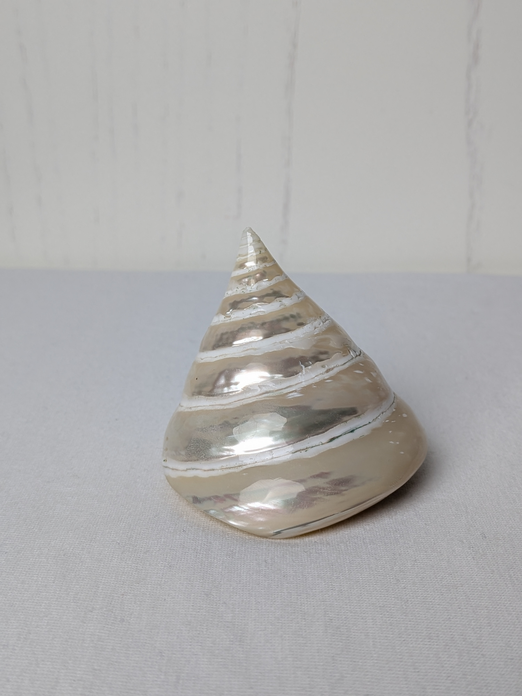
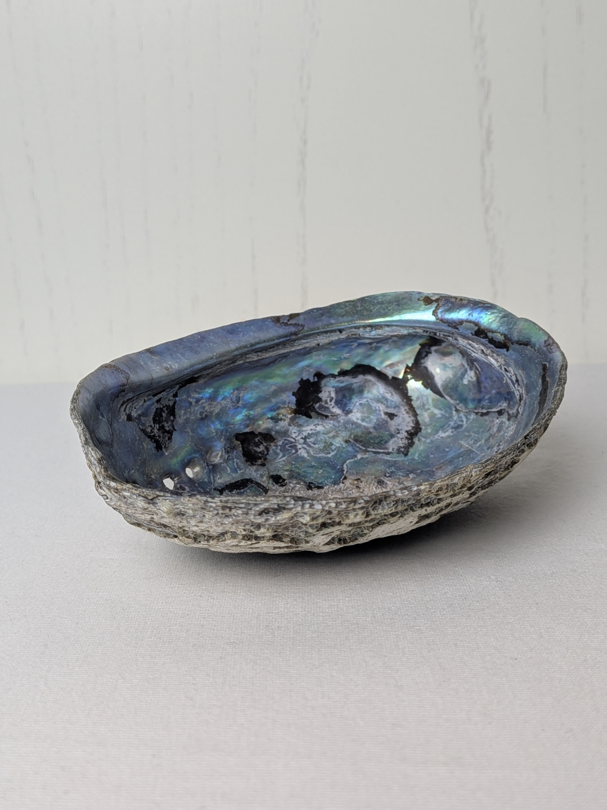
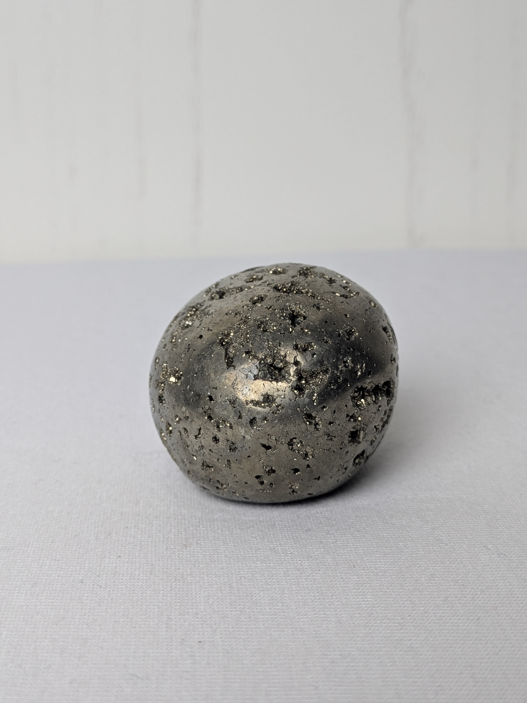
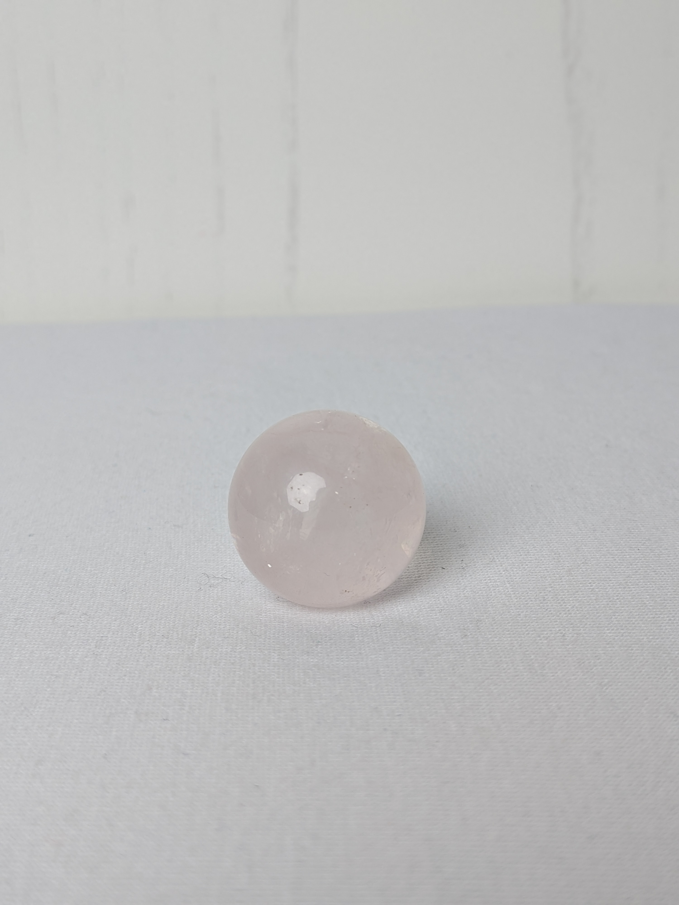

Produktkatalog
Zur Zeit ist unser Katalog einweinig beschränkt, da es zu Schwirigkeiten innerhalb der Lieferkette gekommen ist.
Falls keines dieser einzigartigen Objekte ihr Interesse wecken sollte, bitten wir um Gedult!
| Perlmutnachtschnecke | Ostseeohr | Goldener Komet | Rosenquarz Kugel |
|---|---|---|---|
|  |  |  |  |